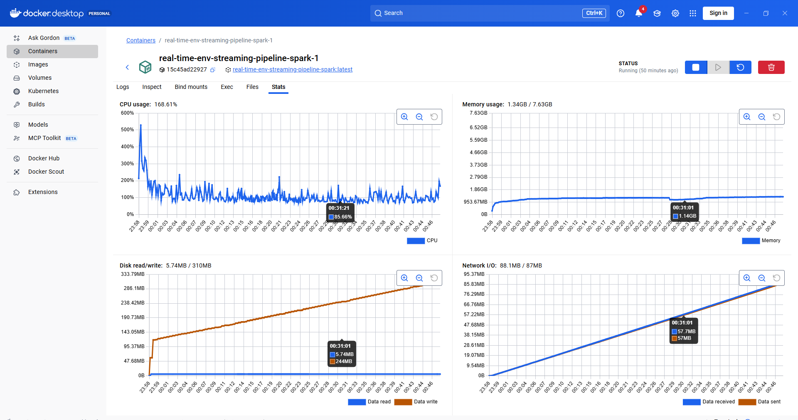
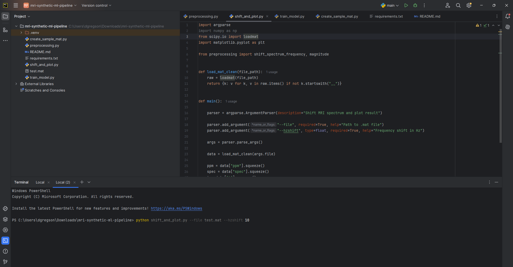
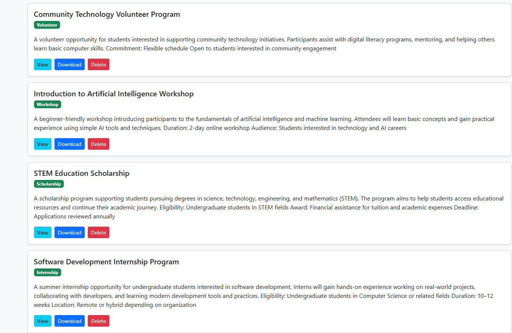

Real-Time Environmental Streaming Pipeline
Built a real-time data engineering pipeline that simulates environmental sensor
data streams and processes them using distributed streaming technologies.
Includes Kafka ingestion, Spark Structured Streaming processing, Airflow workflow
orchestration, and PostgreSQL storage.
Python • Kafka • Spark • Airflow • PostgreSQL • Data Engineering

MRI Synthetic ML Pipeline
Synthetic MRI spectroscopy machine learning pipeline that applies FFT-based
preprocessing, spectral shifting, and feature extraction to analyze
frequency-domain signals from imaging data.
Python • NumPy • SciPy • Machine Learning • Signal Processing

YouthLink Opportunity Platform
A full-stack web platform that allows users to discover youth opportunities
including internships, scholarships, and workshops with document upload,
search filtering, and database-backed management.
Python • Flask • SQLite • Bootstrap • Backend Development

Cassandra LangFlow Chatbot
Built a LangFlow-based chatbot system integrated with Apache Cassandra
for managing conversational data. Demonstrates NoSQL database design,
query workflows, and backend integration.
Python • Apache Cassandra • LangFlow • NoSQL